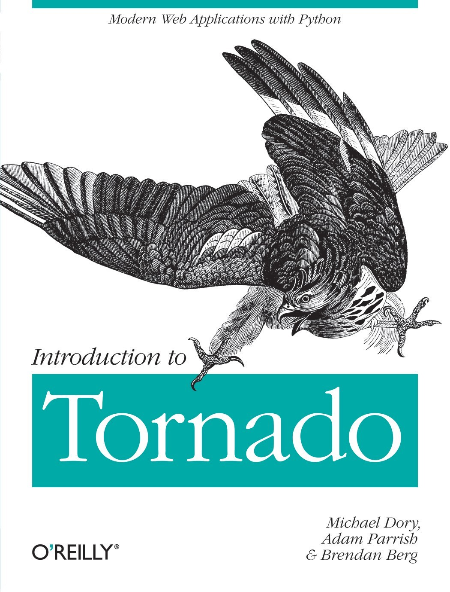

目 录
第一章：引言
1.1 Tornado是什么？
1.1.1 Tornado入门
1.1.2 社区和支持
1.2 简单的Web服务
1.2.1 Hello Tornado
1.2.1.1 参数handlers
1.2.1.2 使用正则表达式指定路径
1.2.2 字符串服务
1.2.3 关于RequestHandler的更多知识
1.2.3.1 HTTP方法
1.2.3.2 HTTP状态码
1.2.4 下一步
第二章：表单和模板
2.1 简单示例：Poem Maker Pro
2.1.1 渲染模板
2.1.2 填充
2.2 模板语法
2.2.1 填充表达式
2.2.2 控制流语句
2.2.3 在模板中使用函数
2.3 复杂示例：The Alpha Munger
2.3.1 它如何工作
2.3.2 提供静态文件
2.3.2.1 设置静态路径
2.3.2.2 使用static_url生成静态URL
2.3.3 模板的下一步
第三章：模板扩展
3.1 块和替换
3.1.1 块基础
3.1.2 模板练习：Burt's Book
3.1.3 自动转义
3.2 UI模块
3.2.1 基础模块使用
3.2.2 模块深入
3.2.3 嵌入JavaScript和CSS
3.3 总结
第四章：数据库
4.1 使用PyMongo进行MongoDB基础操作
4.1.1 创建连接
4.1.2 处理文档
4.1.3 MongoDB文档和JSON
4.2 一个简单的持久化Web服务
4.2.1 只读字典
4.2.2 写字典
4.3 Burt's Books
4.3.1 读取书籍（从数据库）
4.3.2 编辑和添加书籍
4.3.2.1 渲染编辑表单
4.3.2.2 从数据库中取出书籍信息
4.3.2.3 保存到数据库中
4.4 MongoDB：下一步
第五章：异步Web服务
5.1 异步Web请求
5.1.1 从同步开始
5.1.2 阻塞的困扰
5.1.3 基础异步调用
5.1.4 异步装饰器和finish方法
5.1.5 异步生成器
5.1.6 异步操作总结
5.2 使用Tornado进行长轮询
5.2.1 长轮询的好处
5.2.2 示例：实时库存报告
5.2.3 长轮询的缺陷
5.3 Tornado与WebSockets
5.3.1 Tornado的WebSocket模块
5.3.2 示例：使用WebSockets的实时库存
5.3.3 WebSockets的未来
第六章：编写安全应用
6.1 Cookie漏洞
6.1.1 Cookie伪造
6.1.2 安全Cookies
6.1.2.1 使用安全Cookies
6.1.2.2 HTTP-Only和SSL Cookies
6.2 请求漏洞
6.2.1 剖析一个XSRF
6.2.2 防范请求伪造
6.2.3 使用Tornado的XSRF保护
6.2.3.1 XSRF令牌和AJAX请求
6.3 用户验证
6.3.1 示例：欢迎回来
6.3.2 authenticated装饰器
6.3.2.1 current_user属性
6.3.2.2 login_url设置
6.4 总结
第七章：外部服务认证
7.1 Tornado的auth模块
7.1.1 认证流程
7.1.2 异步请求
7.2 示例：登录Twitter
7.3 示例：Facebook认证和Graph API
第八章：部署Tornado
8.1 运行多个Tornado实例的原因
8.2 使用Nginx作为反向代理
8.2.1 Nginx基本配置
8.2.2 Nginx的SSL解密
8.3 使用Supervisor监控Tornado进程